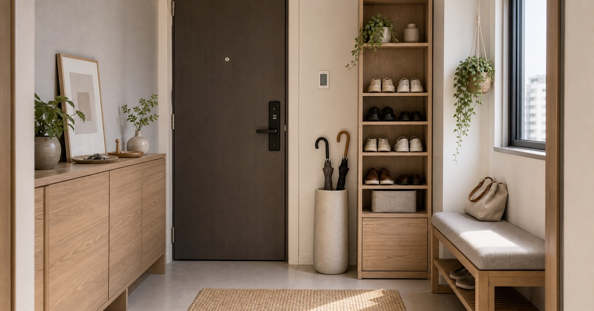

玄關一打開就有秩序：鞋櫃、雨傘架、換鞋凳的 10 個實用選擇
玄關收納先看開門寬度、鞋量、雨傘滴水位置與換鞋動線，再挑鞋櫃、鞋盒、鞋架與換鞋凳。整理關係、財務、居家、工作與自我照顧的判斷順序，幫助讀者把日常重新放回可掌握的位置。並補充適合台灣日常的檢查重點與延伸閱讀，方便搜尋後快速掌握方向。

玄關是家裡最容易露出生活狀態的地方。門一開，如果鞋子、傘、包包和外套沒有各自的位置，空間再大也會顯得凌亂。這篇用鞋量、開門寬度、雨天動線和換鞋習慣作為判斷，把鞋櫃、鞋盒、鞋架、雨傘架與換鞋凳拆成可以實際比較的選項。
先量門片、走道與鞋櫃深度
玄關家具第一個限制不是鞋量，而是門打開後還剩多少寬度。鞋櫃深度、門片開合方向和人轉身的位置都要一起看，窄玄關尤其不能只追求容量。
編輯團隊會把 藤木居家具、☁凌雲家居、RED HOUSE 家具工廠、悅家傢具城 等店家的商品放在同一個生活情境裡比較，但不把單一商品寫成唯一答案。判斷順序是尺寸、動線、拿取頻率、收尾方式，最後才看外觀是否與既有家具協調。
常見錯誤是沒有量門後空間就買落地櫃，是玄關最容易卡住的原因。 建議先用紙膠帶在地面標出寬度與深度，確認開門、轉身、拿取與收納都順手，再決定是否下單。
- 先量寬度、深度、高度與開合方向，再看容量。
- 保留一個固定收尾位置，比多買一件單品更能維持秩序。
鞋櫃、鞋架、鞋盒分別適合不同鞋量
鞋櫃適合想把視覺藏起來的家庭，開放鞋架適合通風與快速拿取，透明鞋盒則適合球鞋或季節鞋分類。真正的關鍵是常穿鞋放外層，低頻鞋往高處或深處移。
編輯團隊會把 藤木居家具、☁凌雲家居、RED HOUSE 家具工廠、悅家傢具城 等店家的商品放在同一個生活情境裡比較，但不把單一商品寫成唯一答案。判斷順序是尺寸、動線、拿取頻率、收尾方式，最後才看外觀是否與既有家具協調。
常見錯誤是把所有鞋都放在同一種收納裡，通常會讓最常穿的鞋反而最難拿。 建議先用紙膠帶在地面標出寬度與深度，確認開門、轉身、拿取與收納都順手，再決定是否下單。
- 先量寬度、深度、高度與開合方向，再看容量。
- 保留一個固定收尾位置，比多買一件單品更能維持秩序。
Elite 嚴選


雨傘架要靠近濕區
雨傘架最好放在進門後不會穿越客廳的位置，底盤、排水和高度都要看。長傘、折傘與雨衣若混在一起，雨天回家會更混亂。
編輯團隊會把 藤木居家具、☁凌雲家居、RED HOUSE 家具工廠、悅家傢具城 等店家的商品放在同一個生活情境裡比較，但不把單一商品寫成唯一答案。判斷順序是尺寸、動線、拿取頻率、收尾方式，最後才看外觀是否與既有家具協調。
常見錯誤是傘架不是裝飾品，能不能讓濕傘自然停下來才是重點。 建議先用紙膠帶在地面標出寬度與深度，確認開門、轉身、拿取與收納都順手，再決定是否下單。
- 先量寬度、深度、高度與開合方向，再看容量。
- 保留一個固定收尾位置，比多買一件單品更能維持秩序。
同場景可比較


換鞋凳要看坐下後的膝蓋與通道
換鞋凳很實用，但它會佔走玄關轉身空間。若家中長輩、孩子或常穿綁帶鞋，坐凳一體鞋櫃會更有存在感；若玄關很窄，就改用薄型凳或可移動凳。
編輯團隊會把 藤木居家具、☁凌雲家居、RED HOUSE 家具工廠、悅家傢具城 等店家的商品放在同一個生活情境裡比較，但不把單一商品寫成唯一答案。判斷順序是尺寸、動線、拿取頻率、收尾方式，最後才看外觀是否與既有家具協調。
常見錯誤是凳面太高或太低都會不好用，建議以實際坐下的姿勢評估。 建議先用紙膠帶在地面標出寬度與深度，確認開門、轉身、拿取與收納都順手，再決定是否下單。
- 先量寬度、深度、高度與開合方向，再看容量。
- 保留一個固定收尾位置，比多買一件單品更能維持秩序。
玄關不要承擔全家的雜物
玄關可以放出門必需品，但不應該放所有備品。安全帽、購物袋、清潔物、快遞箱如果全留在門口，很快會讓鞋櫃失效。
編輯團隊會把 藤木居家具、☁凌雲家居、RED HOUSE 家具工廠、悅家傢具城 等店家的商品放在同一個生活情境裡比較，但不把單一商品寫成唯一答案。判斷順序是尺寸、動線、拿取頻率、收尾方式，最後才看外觀是否與既有家具協調。
常見錯誤是玄關只保留『出門會用』與『回家會放』兩類物品，視覺會立即變乾淨。 建議先用紙膠帶在地面標出寬度與深度，確認開門、轉身、拿取與收納都順手，再決定是否下單。
- 先量寬度、深度、高度與開合方向，再看容量。
- 保留一個固定收尾位置，比多買一件單品更能維持秩序。
每個人的鞋位要明確
多人家庭的玄關，最好直接分配每人鞋位，而不是共用一排。這比多買一層架更重要，因為秩序來自清楚的位置，而不是更多空格。
編輯團隊會把 藤木居家具、☁凌雲家居、RED HOUSE 家具工廠、悅家傢具城 等店家的商品放在同一個生活情境裡比較，但不把單一商品寫成唯一答案。判斷順序是尺寸、動線、拿取頻率、收尾方式，最後才看外觀是否與既有家具協調。
常見錯誤是常穿鞋控制在每人二到三雙，玄關會更容易維持。 建議先用紙膠帶在地面標出寬度與深度，確認開門、轉身、拿取與收納都順手，再決定是否下單。
- 先量寬度、深度、高度與開合方向，再看容量。
- 保留一個固定收尾位置，比多買一件單品更能維持秩序。
可順手比較的品牌
FAQ
玄關很窄還適合放鞋櫃嗎？
可以，但要優先看門片開合、走道寬度與鞋櫃深度，必要時選薄型鞋櫃或透明鞋盒。
雨傘架要選大容量嗎？
不一定。要看家中傘的數量、是否有長傘與濕傘停放位置，大容量若放錯位置也會妨礙動線。
換鞋凳有必要嗎？
若家中常穿綁帶鞋、長靴，或需要坐下整理包包，換鞋凳會很實用；玄關很窄則要選可移動或窄版款式。
下一步建議
挑選前先確認尺寸、動線、使用頻率與收尾方式；若要延伸比較，可從本篇整理的店家頁與商品頁逐一查看規格。
重要警語
本文為一般玄關家具與收納情境整理，不宣稱商品承重、防潮或耐用效果。實際尺寸、材質、活動、價格與庫存請以 momo 商品頁公告為準。
本文含品牌／商品導購連結；若你透過部分商品連結前往選購，Elite Fashion 可能取得合作收益。本文仍以編輯判斷與使用情境整理為主，價格、規格、活動與庫存請以商品頁公告為準。